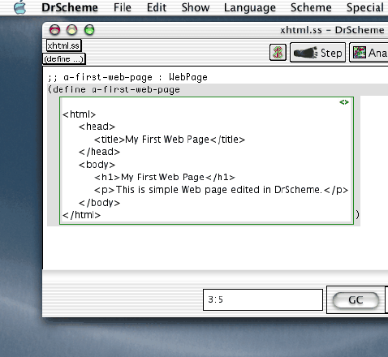

Extended Exercise: Interacting on the Web
A Supplement to “How to Design Programs”
©2002 Felleisen, Findler, Flatt, Krishnamurthi
1 Web Interactions
Programs can request information from the Web, process it, and post a reply. In conventional languages, interacting via the Web is a complicated process. In DrScheme, it is easy to develop such programs and to link existing functions to a Web interface (assuming they are developed according to the design recipe). This extended exercise carefully introduces the means to do so with a series of examples that are tied to the classes of data in HtDP.
1.1 The Basic Interaction Model
PREREQUISITE:
5.1. Symbolic Information
TEACHPACK: servlet2.ss
A program can query a consumer via a Web browser and obtain a response. The function that implements this interaction is
;; single-query : String → String
The function consumes a question in a Web browser next to a text field. It then suspends the program until the consumer hits return in that field. At that point, the function produces the current content of the text field as its result.
On occasion, it is also important to inform a consumer of something and to wait until the consumer wishes to continue the dialog. We can accomplish this with the function
;; inform : String * → true
It displays the given string (and indeed, as many strings as desired) on a
Web page. The bottom of the page is a link marked with the word
“Continue”. When the consumer clicks on this link, the function produces
true.
Consider this expression:
(inform "You typed" (single-query "How are you?"))
It requests a string from the consumer and echoes it to a Web page. Here is a slightly more interesting variant:
;; reply : String → String
;; to compute a reply to a greeting
(define (reply greeting)
(cond
[(string=? "fine" greeting) "That's good."]
[(string=? "not so good" greeting) "Oh. What's wrong?"]
[else "Sorry, I didn't catch this. Could you repeat this?"]))
(inform "You typed"
(reply
(single-query "How are you?")))
This program actually computes another string from the response to the greeting and posts it instead of a plain echo to the next page.
At first glance, single-query is useless for programs that process
numeric data. After all, it only consumes and produces
strings. Fortunately, Scheme provides functions for converting strings to
numbers and numbers to strings. For example,
(= ( string→ number "5.05") 5.05)
produces true and so does
(string=? ( number→ string 5.05) "5.05")
Of course, not all conversions from strings to numbers can succeed. The
string "this is not a number" just doesn’t represent a
number. For such cases, string→number produces
false.
Using the conversion functions, we can now develop a simplistic calculator expression:
(inform "Calculator Result" ( number→ string (+ ( string→ number (single-query "Enter a number")) ( string→ number (single-query "Enter another number")))))
This expressions requests two numbers from a computer, one at a time. It then displays the sum of the two numbers.
Exercise
Exercise 1.1.1.
Develop request-number. The function consumes a string and uses
the string to request a number from a consumer. It produces a number. Use
the function string→number0, which consumes a string and
produces a number:
;;string→ number0 : String → Number;; convertsto a number, if possible, otherwise produce0(define ( string→ number0 s) (cond [(number? ( string→ number s)) ( string→ number s)] [else 0]))
If string→number produces a number, the result is that number;
otherwise, it is 0.
Use the two functions to make the calculator conform with our program design guidelines and to make it more robust. Solution
Exercise 1.1.2. Develop a function that converts the name of a foreign currency ("peso" (MX), "euro" (EU), "pound" (UK), etc) into a conversion factor, i.e., a fraction that converts US$100 into the foreign currency.
Use the function to develop a currency conversion Web site. The Web site converts amounts in one of the chosen currencies to US dollars. It consists of three pages: a page that requests the name of a currency, a page that requests an amount, and a page that displays the result of the calculation.
A good site should not only display the final result on the last page, but also a confirmation of the inputs. Make the last page look like this:
Converting 9800 euro into US dollars yields 10000.
That is, in addition to the result, it should display the amount and the
name of the original currency. Hint: develop a function result,
which consumes the inputs deals with them
appropriately. Solution
Exercise 1.1.3.
Develop calculate. The function consumes a number, a string
(o), and another number. It attempts to interpret o as
one of the arithmetic operations +, -, *, or / and, if possible, applies
the appropriate operation to the two numbers. The function also converts
the result of the operation to a string. If o is not one of the
four arithmetic operations, the function produces an informative
string. Solution
Exercise 1.1.4.
Develop the function range-query. It consumes a pair of numbers,
low and high. Its purpose is to request a number in this
range from a consumer. If the submitted response is in the specified range,
the function prints the phrase “n is okay.”; otherwise, it
prints the phrase “n is not okay.” The result of
range-query is true. [Note: Do not forget the design
recipes and the guidelines.] Solution
1.2 Hidden Interactions
PREREQUISITE:
6.1. Structures
Web programs often need to restrict access to a Web site. For example, a
store may limit a purchasing page to registered users. To implement such
restrictions, Web programs ask consumers to identify themselves with a
username and a password. Naturally, passwords should not appear on the
screen as consumers type them. For that reason, Web browsers provide
special password text fields. A DrScheme Web program can use such
password-style text fields by applying single-query to a
password structure rather than a plain string.
A password structure consists of a single value. To construct a
password structure, we apply make-password to a string:
(make-password "Your passphrase please:")
When the program supplies such a structure to single-query, the
function posts the embedded string as a question and places it next to a
password text field. Hence, when the user types a response in this field,
nobody can see the actual characters.
Figure 1 is a typical use of the password
structure. The program first requests a user name and then a password. The
function response checks that the two match and informs the
consumer of the result.
Exercise
Exercise 1.2.1. Modify the program in figure 1 so that the successful consumer is allowed to convert currencies. Use the functions from exercise for the second part. 1.1.2. Solution
Exercise 1.2.2. Develop a Web site that registers new users. The site should ask for a name, a password, and a confirmation of the password. If the two passwords are the same, the site confirms that the consumer is registered. The confirmation should include the consumers chosen username. If the two passwords differ, the site informs the consumer that there is a mismatch. Solution
1.3 Typed Interactions
PREREQUISITE:
7. The Varieties of Data
Our first version of the calculator program in
section 1.1 is seriously flawed. It provides the consumer with
a simple text field and then attempts to convert the string input to a
number. If the consumer submits a text that does not represent a number,
the program fails because string→number produces false,
and + can only consume numbers.
Since this situation recurs frequently, DrScheme supports a variety of ways
to query the consumer so that the results belong to a well-defined class
of data. More specifically, single-query consumes not only
strings but queries. The class of queries is defined as follows:
A Query is either
String
(make-password String)
(make-number String)
(make-boolean String)
(make-yes-no String String String)
The first three kinds of queries place questions next to text fields, but
single-query ensures that these text fields have appropriate
properties. For a number structure, for example, it insists that
the contents of the text field is a number when it is submitted. Using a
boolean structure, however, draws a check box next to the
question. If the consumer turns the check box on, single-query’s
result is true; otherwise it is false. A yes-no
structure poses a Yes-or-No-type question with two possible phrases as
responses. For example, a Web program may ask
(single-query (make-yes-no "Do you accept the agreement?" "I accept." "I decline."))
The response is either "I accept." or "I decline." but
nothing else
We can now exploit this richer class of queries to improve the calculator:
(inform "Calculator Result" ( number→ string (+ (single-query (make-number "Enter a number")) (single-query (make-number "Enter another number")))))
Now both applications of single-query produce a number, and it is
therefore no long necessary to convert their results.
Exercise
Exercise 1.3.1.
The function single-query consumes a Query and produces an
Response. Develop a data definition for Response. Then discuss
which query produces which response. Solution
Exercise 1.3.2. Modify the solution of exercise 1.1.2 so that it uses the new kinds of queries where appropriate. Solution
Exercise 1.3.3. Modify the solution of exercise 1.1.3 so that it uses the new kinds of queries where appropriate. Solution
Exercise 1.3.4. Develop a structure and data definition for a calendar date (year, month, day). Use numbers for each piece of information.
Develop the function request-date. It consumes true and
produces a calendar date, which it requests from a consumer via a
browser. Make sure that the submitted information is in the proper
range. Solution
Exercise 1.3.5.
Develop pick-toppings. The function consumes true and then
asks the consumer which of the following toppings should be put on a pizza:
anchovies, broccoli, or chestnuts. The result of the function is a
toppings structure with three Boolean
fields. Solution
1.4 Radio Boxes and Interactions
PREREQUISITE:
9. Compound Data, Part 2: Lists
Consider the problem of finding out a consumer’s preference. Say, a program needs to determined the preferred choice of color for some product. Suppose the product comes in five colors: green, red, blue, white, and black. The choices naturally make up a list, and the consumer should pick exactly one of the items on the list.
Using the current class of queries, solving this problem is a complicated
game. For that reason, Web browsers support a so-called radio check box in
addition to ordinary check box. Roughly speaking, a radio box is a multiple
choice question. It consists of a question and a list of mutually exclusive
responses. To accommodate this kind of interaction, we extend the
Query class with an additional alternative:
A Query is either
...
6.
(make-radio String List-of-string)
A List-of-string is either
empty, or
(cons String List-of-string)
Now, choosing a color is no longer a problem:
(single-query (make-radio "Please choose a color from the following list" (list "green" "red" "blue" "white" "black")))
The result of this application is one of the five choices.
Exercise
Exercise 1.4.1. Develop a Web page that “sells” a product that comes in four sizes. Solution
Exercise 1.4.2.
Develop the function request-grade, which consumes a list of grades and
produces one of them, via a Web interaction with a
teacher. Solution
Exercise 1.4.3.
Develop a variant of request-date (see exercise 1.3.4)
using radio structures instead of (numeric) text fields so that
consumers can’t make silly input mistakes. Solution
Exercise 1.4.4.
Use the function request-date from
exercise 1.4.3 to develop a “suspend and resume”
service for your favorite newspaper. The purpose of the service is to
enable subscribers to suspend the delivery of their newspaper for a
vacation. The service should interact with consumers as follows:
log in (provide name, subscription number); and
choose a date for suspending the newspaper delivery; and
choose a date for resuming delivery; and
print page with a summary of the information.
Make sure the dates are ordered properly and inform the consumer of mistakes. Solution
PREREQUISITE: 10.1 Functions that Produce Lists
Develop a Web site for evaluating teachers. The underlying Web program should consume a list of questions (strings), pose each question, and produce a list of grades. Use the numbers 1 through 4 as grades. Solution
PREREQUISITE: 10.2 Lists that Contains Structures
Develop the function play, which plays an on-line version of the
game show “Who Wants To Be A Millionaire?” with a consumer. The function
consumes a list of questions and produces true. Each question
comes with a correct answer and a list of possible answers; the correct
answer is an item on this list. The program poses each question and its
possible answers. As long as the consumer chooses the correct answer, the
game continues. When the consumer submits an incorrect answer, the program
terminates and the player loses. When there are no more questions, the
player has won.
Hint: Develop ask-all-questions. This auxiliary function consumes
a list of questions (and their associated answers), asks all questions,
and produces a Boolean value. Specifically, if all answers are correct,
the function produces true, otherwise false. Test
ask-all-questions with a simplistic definition for a function
that asks a single question.
Challenge: Use the navigation capabilities of your favorite Web browser to win a game with three questions, each with two answers without ever re-starting the game program. Solution
1.5 Forms and Interactions
PREREQUISITE: 10. Lists that Contains Structures
Consumers do not like to wait for Web pages. Hence, Web programs should send as few pages as necessary and not more. Now that we know lists, it is natural to say that a program should send an entire list of queries. Although this idea is natural, it also has a serious flaw. To understand this flaw, consider what the browser should send back to the program when given a list of queries. Since the consumer must provide an response to each and every one, the browser should send a list of responses. This raises the question of how to identify a browser’s response for a specific question. Clearly, we could use the position of the original question to find the response to the question. Experience shows, however, that this procedure is cumbersome and error-prone. Instead we follow an old Lisp tradition and associate symbols with queries and responses.
DrScheme’s general mechanism for conducting Web dialog’s with consumers is based on forms:
A Form is either
empty, or
(cons Form-item Form)
A Form-item is a list with two items:
(cons Symbol (cons Query empty)).
A Web program can send a form to the consumer via an additional function:
;; form-query : Form → Table
The response that the function produces is also a list and contains as many items as the form that it sent. Here is the data definition:
A Table is either
empty, or
(cons Table-item Table)
A Table-item is a list with two items:
(cons Symbol (cons Response empty)).
As before, a response is either a string, a number, or a boolean, though as discussed, each kind of query produces a specific kind of response.
Take a look at this example:
(form-query (cons (cons 'first (cons "first name" empty)) (cons (cons 'last (cons "last name" empty)) (cons (cons 'yob (cons (make-number "year of birth") empty)) empty))))
This query requests three pieces of information with a single Web page: a consumer’s first name, last name, and year of birth. The result is a structure such as this one:
(cons (cons 'first (cons "matthias" empty)) (cons (cons 'last (cons "krishnamurthi" empty)) (cons (cons 'yob (cons 1914 empty)) empty)))
That is, the result is also a list of three items: two strings and a number, each tagged with a symbol.
String → (list 'likes Query)(define (likes lang) (list 'likes (make-boolean (string-append "Do you like " lang " ?")))) ;;Form(define language-query (cons (cons 'name (cons "Name:" empty)) (cons (likes "Scheme") (cons (likes "Java") (cons (likes "C++") empty))))) ;;likes-how-many : Table → Number;; to count how many times the tag'likesis associated withtrue(define (likes-how-many a-table) ...) ;; run program run: (inform "Okay, so you like " ( number→ string (likes-how-many (form-query language-query))) " languages.")
Figure 2:
The tags in a Form don’t have to be unique. For example, the
program fragment in figure 2 asks four questions,
three of them labeled 'likes. It counts how many of those the
consumer checked and confirms the tally.
Exercise
Exercise 1.5.1.
Develop the function likes-how-many, which consumes a
Table and counts how many times the tag 'likes is
associated with true in the table. Use the function to complete
the program in figure 2. Solution
Exercise 1.5.2.
Develop the function choose-toppings. It consumes a list of strings
(pizza toppings) and presents all of them as boolean queries on a single Web
page. If produces the list of all checked choices. Solution
Exercise 1.5.3.
Develop extract1. The function consumes a symbol (s) and
a table (t). It extracts the list of all Table-items
whose tag is s.
Develop extract2. The function consumes a symbol (s) and
a table (t). It extracts the single value in t whose tag
is s. If there is more than one such item or none, the function
signals an error. Hint: Use extract1 and develop an auxiliary
function that extracts a single item from a list of answers, if the list
contains a single answer. Solution
The teachpack servlets2.ss provides two functions for extracting
items from a Table. The first one, extract/single, finds
the response that is associated with a unique tag; it raises an exception
if the table contains no response or more than one response labeled with
the given tag. The second one, extract, finds all the responses
associated with a given tag. If there aren’t any, it produces
empty. Using extract, we can define the function
likes-how-many as a one-liner:
(define (likes-how-many alor) (length (extract 'likes alor)))
The function extract/single is useful when we need to extract
unique pieces of information.
basic-info : true → Table;; request basic info from participant (define (basic-info go) (form-query INFO-PAGE)) ;;Form(define INFO-PAGE (cons (cons 'first (cons "First Name" empty)) (cons (cons 'last (cons "Last Name:" empty)) (cons (cons 'email (cons "Email address:" empty)) empty)))) ;;determine-choices : Table → Table;; dispatch to additional page per choice, append all choices made (define (determine-choices contact-info) (refine-choices contact-info (form-query CHOICE-PAGE))) ;;List-of-strings[list of locations] (define LOCs (cons "Atlanta" ...)) ;;Form[first,second,housing](define CHOICE-PAGE (cons (cons 'loc (cons (make-radio "first choice of location" LOCs) empty)) (cons (cons 'loc (cons (make-radio "second choice of location" LOCs) empty)) (cons (cons 'housing (cons (make-boolean "Do you need housing?") empty)) empty)))) ;;refine-choices : Table Table → Table(define (refine-choices t1 t2) (append t1 (extract1 'loc t2) (refine-housing (extract/single 'housing t2)))) ;;refine-housing : Boolean → Table(define (refine-housing housing?) ...) ;;confirm-info+choices : Table → true(define (confirm-info+choices t) (inform "Confirmation" ... (extract/single ' first t) ...))
Figure 3: A workshop registration site
Forms and tables greatly facilitate the development of serious Web dialogs. Consider a dialog for registering participants for summer workshops on designing programs. It is important for the workshop manager to obtain some basic information from all the participants and to determine some additional information.
Let’s be more concrete:
The Web program should gather basic information such as first name, last name, and an email address.
Next the program should ask the participant which workshop he wishes to attend. Workshops take place in Atlanta, Boston, Chicago, New York City, Providence, and Salt Lake City. Each participant may sign up for a first and a second choice. Also, the manager needs to know whether the participant wishes to use on-campus housing and, if so, what kind.
Finally, the program should summarize the chosen options and ask for a final commitment from the participant.
The explanation suggests that this particular dialog consists of a collection of questions that can be arranged in a chain with subchains. One natural translation of the chain into a program is a composition of functions that correspond to each stage. Each function in turn may consist of additional function compositions:
(confirm-info+choices (determine-choices (basic-info true)))
This sample expression first collects basic information, determines what other information it should collect, and finally requests a confirmation.
Using a function composition raises a question concerning the flow of data
among the functions. For a dialog such as this one, we can think of the
data as a record of information about the participant. At each stage, we
learn more and the record grows as it flows through the functions. Since
form-query produces Tables and since a Table is
a convenient representation for an ever-growing record, it is natural to
use Table as the class of values.
Figure 3 shows the code. The contracts for
basic-info, determine-choices, and
confirm-info+choices reflect the preceding discussion. The domain
of basic-info is true, because it simply waits for a
signal from the browser that the potential participant has entered the
site. For symmetry, the range of confirm-info+choices is
true, because the result is simply a signal that the dialog has
terminated properly.
For a first instructive example, take a look at basic-info in
figure 3. The function comes with an auxiliary Form
definition that specifies the form with which it gathers the necessary
information. A second interesting example is refine-choices. It
appends three tables: t1, which contains the basic information;
(extract 'loc t2), which is the subset of the table concerning housing
(see exercise 1.5.3); and the table that
refine-housing builds.
The contract for refine-housing suggests which task the function
performs. It consumes a boolean that specifies whether or not a
participants needs housing. If so, the function builds a table with
another query to the participant:
(define (refine-housing housing?) (cond [housing? (cons 'housing-type (cons (single-query (make-yes-no "What kind of housing do you need?" "Single" "Double")) empty))] [else (cons 'housing-type (cons "none" empty))]))
If not, the function produces a default table without sending another query to the participant. In short, auxiliary functions not only match the program to the tasks at hand, they also make dialogs naturally more efficient for a consumer.
Exercise
Exercise 1.5.4. Complete the workshop sign-up program.
Modify the workshop program so that it can request better information about the housing request. Specifically, if the participant chooses a double room, the manager needs to know whether the second space is for a spouse, whether it is for a known partner, or whether the participant wishes to be paired with another person. Solution
Exercise 1.5.5.
Revise the suspend-and-resume program from exercise 1.4.4 so
that it uses Forms and
Tables. Solution
Exercise 1.5.6. Revise the teacher-evaluation program so that it groups related questions on a single page. Solution
Exercise 1.5.7. Develop a pizza ordering site where customers in a store’s database can login and order a pizza. The dialog provides the following four stages:
the login stage requests a customer name and also asks whether delivery is desired;
the pizza specification stage determines the pizza that the consumer would like; here are the options:
- kind
- chicago, new york, california, hawaii;
- size
- small, medium, large, texas;
- toppings
- eggplant, banana, broccoli, anchovies, eggs.
if the consumer chose the delivery option during login, the third optional stage requests delivery information now; we assume that we only need the street address and the zip code (5 digits, i.e., numbers);
the confirmation stage prints a summary of all information, including the cost of the pizza; once the consumer proceeds, the pizza is ordered and the servlet terminates.
The cost of a pizza is determined as follows. The kind determines the base cost; a Chicago style pizza is 6.95, all others are 5.95. The size adds some cost: for a medium add $1, for a large $5, and for a “texas” add $7. Finally, the first topping is free, the others cost $.50 per topping. The money is due upon pickup or delivery.
The program should produce a Table with the customer name, the
pizza specification, and information about the delivery. Do not worry
about things that can go wrong. Solution
2 List Abbreviations
PREREQUISITE:
Intermezzo 2: List Abbreviations
Use the above exercises and examples to motivate abbreviations
for forming lists. Especially list is useful in this context.
3 Web Pages in Scheme
PREREQUISITE:
Intermezzo 2: List Abbreviations
PREREQUISITE:
14.3 Lists in Lists
PREREQUISITE:
15. Mutually Referential Data Definitions
The design of sophisticated Web programs requires more familiarity the design of Web pages and Web forms than the first section assumes. Such Web programs produce Web pages with interesting layouts, mixing information with query elements in complex ways. On some occasions, Web programs even consume Web pages or information that looks like a Web page. In this section, we discuss the basics of Web page formatting, representing Web pages in DrScheme, and Web page elements for querying consumers.
3.1 XHTML
The language of the Web is XHTML.1 It consists of words and instructions for rendering the words. One of the most well-known instructions is to turn some words into a link to another Web page. This instruction connects pages in the fashion of a spider web. Other instructions render a group of words as a paragraph, as an unsorted list, or as a table.
Roughly speaking, an XHTML expression is a fully parenthesized form of data. The major visual difference between an XHTML expression and an S-expression is that there are many forms of “parentheses” in XHTML, not just Scheme’s parentheses, brackets, and braces. XHTML’s parentheses are made up of words, called tags. For example, a simple XHTML Web page looks like this:
<html> <head> <title>My first Web page</title> </head> <body> <h1>My first Web page</h1> <p>Hello World.</p> </body> </html>
The tokens <html> and </html> are called the start
tag and the end tag. We think of them as parentheses.
Here is the meaning of some of the most basic tags in XHTML:
|
Most tag come with attributes. Typographically, an attribute looks like an equation in the start tag. For example, the body of a Web page may include a specification for a background color:
<body bgcolor="#e5e5e5">A page with color</body>
The name of the attribute is bgcolor; the value is "e5e5e5". All attribute values are specified as strings. To achieve a good visual effect, it is important to study what the valid attributes and their values of XHTML elements are.
Two tags that always come with attributes are a and img. With the former, we can specify a link in a Web page. For example, if we place
<a href="http://www.htdp.org/"> How to Design Programs (on-line) </a>
we create a link to the on-line version of “How to Design Programs” in a Web page. The href attribute specifies the address to which we link and the words between the tags specify how the link appears on a page. Similarly, this line
<img src="http://www.htdp.org/htdp.gif"
alt="a picture">
</img>
places the image from http://www.htdp.org/htdp.gif inside of a Web page. The src attribute says where the image is located, and the alt attribute specifies what to replace the image with in case the Web browser can’t look it up.
Figure 4: XHTML in DrScheme
XHTML tables play a central role in the design of Web forms. A table consists of rows; a row consists of cells. Here are the subset of the tags that matter in this context:
|
Consider the following XHTML specification:
<table>
<tr><th>table tag</th> <th>meaning</th></tr>
<tr><td>table</td> <td>a table</td></tr>
<tr><td>tr</td> <td>a row</td></tr>
<tr><td>th</td> <td>a title cell in a row</td>
</tr>
<tr><td>td</td> <td>a cell in a row</td></tr>
</table>
This XHTML specification produces a table in a Web browser that is similar to the one above that specifies the meaning of table tags.
DrScheme supports XHTML with a special editing feature, called an XML box. An XML box is inserted with the Special | Insert XML Box menu. Inside the box, DrScheme auto-completes XHTML the end tags and inserts tabs in an XHTML appropriate fashion. Figure 4 illustrates the idea with a simple example. As the figure shows, a box can appear wherever a Scheme expression appears. Naturally, this means that such boxes are Scheme expressions and evaluate to Scheme values. The “why” and “how” of this connection is the subject of the next section.
Exercise
Exercise 3.1.1. Specify an XHTML page that contains a title, a link to a page made by your teacher, and a picture. Solution
Exercise 3.1.2. Specify an XHTML table with three rows of two cells each. Each right cell should contain a picture of one of your friends, and the left cell the friend’s name. Solution
3.2 XHTML in Scheme
Effective Web programming requires a tight integration of XHTML into Scheme and vice versa. A program must be able to specify patterns of Web pages, produce portions of Web pages, and glue together pieces of a Web page to form a whole. The best way to achieve this integration is to represent XHTML (a new form of information) as Scheme data.
An X-exp is one of:
String
(cons Symbol (cons Attributes List-of-X)))
An List-of-X is either
empty
(cons X-exp List-of-X)
A List-of-Attributes is either
empty
(cons Attribute List-of-Attributes)
An Attribute is a list of two items: (cons Symbol (cons String empty))
Figure 5: XHTML as Scheme
Figure 5 presents the data definitions for one of many
possible representations of XHTML in Scheme. A plain piece of XHTML
corresponds to an X-expression or X-exp for short. It is either a
string or a list with at least two items: a symbol, a
List-of-Attribites, followed by a list of X-expressions. The
symbol is the name of the tag. The list of X-expressions represents the
XHTML that is between the start and the end tag.
For a good understanding of X-expressions, it is best to consider a series of examples. Here is our first Web page again and its Scheme representation:
<html>
| '(html () (head () (title () "A Simple Web Page")) (body () (h1 "My First Web Page") (p "Hello World"))) |
The comparison shows that a Scheme representation of XHTML is
more compact than XHTML itself. When we write down an X-expression we only
write down the name of the tag, not a start and an end tag. Empty
attribute lists become () because '() is
empty.
Now suppose we wish to have a page with a white background. In that case, we add an attribute to the body tag:
'(html () (head () (title () "My First Scheme Web Page with Attributes")) (body ([bgcolor "white"]) (h1 "My First Page") (p "Hello World")))
The page has a head element and a body element. The body has one attribute: a background color.
The real power of Scheme’s X-expressions, though, is derived from the power of lists and nesting lists. Here is a generalization of the first Web page:
;; String → X-exp
(define (n-th-web-page n)
(local ([define title (string-append "My " n " Scheme Web page")])
(list 'html empty
(list 'head empty (list 'title empty title))
(list 'body (list [list 'bgcolor "white"])
(list 'h1 empty title)
(list 'p empty "Hello World")))))
Using n-th-web-page, we can now easily produce the
"first", "second", and so on Web pages. Of course, this
definition is basically a constant definition for a Web page; its only
parameter is n, which is plugged into the text without any
concern for its structure.
empty;; -(cons String-pair List-of-2Strings);; A String-pair is a list with two strings:(list String String);;create-table : List-of-2Strings → X-exp[table](define (create-table alos) (cons 'table (cons empty (create-all-rows alos)))) ;;List-of-2strings → list-of-X[tr](define (create-all-rows alos) (cond [(empty? alos) empty] [else (cons (create-one-row (first alos)) (create-all-rows (rest alos)))])) ;;String-pair → X-exp[tr](define (create-one-row s2) (list 'tr empty (list 'td empty (first s2)) (list 'td empty (list 'img (list (list 'src (second s2)) (list 'width "200") (list 'alt "pic"))))))
Figure 6: Creating XHTML
While such Web page patterns are useful, it is still a pretty static way of
dealing with XHTML. Consider a store instead. When a consumer inquires
about sales, a Web program may need to produce a table of descriptions and
pictures from a list of strings and URLs. In other words, we need a
function that produces a table from a list. It is not the table itself,
however, that requires computation but the rows in the table. After all,
the tag 'table occurs only once in the resulting page, but the
tag 'tr occurs as many times as there are objects on the for-sale
list.
Figure 6 displays the code for the program. The
function create-table is the main function, though
create-all-rows conducts most of the work. The latter function
produces the all the rows from the list. Finally, the last function in the
figure is analogous to n-th-web-page. It just plugs in some
constants into a template.
The teachpack servlet2.ss provides the function inform/html for
displaying XHTML expressions in a browser. It consumes a list of
X-exp and sends them to a Web browser. As for inform, the
bottom of the page includes a link so that consumers can continue with the
rest of the program.
![[XHTML in DrScheme]](Images/xhtml2.gif)
Figure 7: Mixing XHTML and Scheme in DrScheme
Exercise
Exercise 3.2.1.
Develop the function create-paragraphs. It consumes a list of
strings and produces a series of XHTML paragraphs from them. The
paragraphs are then wrapped in a 'div.
After the function is tested, use inform/html to display the
result of the function in a browser. Solution
Exercise 3.2.2.
Develop the function create-enumeration. It consumes a list of
strings and produces an XHTML enumeration or ordered list. An ordered
list is tagged with 'ol and contains elements that are tagged
with 'li (for list item).
After the function is tested, use inform/html to display the
result of the function in a browser. Solution
Exercise 3.2.3.
Develop the function enum-table. It consumes a natural number and
produces a table with that many rows. Each row has one cell, and the cell
contains the number as an index. Solution
Exercise 3.2.4.
Develop the function create-matrix. It consumes two natural numbers:
n and m. Its result is an X-exp.
;; Example: (equal? (create-matrix 3 2) '(table () (tr () (td () "cell00") (td () "cell01")) (tr () (td () "cell10") (td () "cell11")) (tr () (td () "cell20") (td () "cell21"))))
Make up examples with smaller numbers. Solution
Figure 7 shows how to mix XML boxes and Scheme code in
DrScheme. The functions in the Definitions are the same as those
presented in figure 6. In create-one-row,
the boxes inside of the XML boxes are so-called Scheme Boxes, also
available under the Special menu. These boxes evaluate to plain
Scheme values are place into the surrounding XHTML text. We can thus turn
an XML box into a pattern.
The box inside of create-table’s XHTML box is a so-called
Scheme Slice Box. The expression inside such a box must evaluate to
a list. The list is spliced into the surrounding XHTML text. In this case,
the rows are placed inside the XML box as the rows of the table. If we had
used an ordinary Scheme Box instead, all rows would become a single
ill-formed XHTML element inside of the table. Distinguishing the two kinds
of boxes takes practice, but pays off when XHTML with large portions of
plain text play a role in the Web page creation.
3.3 Forms
A F-expr is: (cons 'form (cons (listof F-attributes) (listof X-exp)))
A F-attribute is one of:
(list 'method String["get","post"])
(list 'action String[url])
A F-input is a list: (list 'input I-attributes)
A I-attributes is one of:
(list 'type I-type)
(list 'name String)
A I-type is one of:
"submit"
"text"
"password"
"check"
"radio"
Figure 8: XHTML forms in Scheme
Exercise
Exercise 3.3.1. Solution
Exercise 3.3.2. Solution
3.4 Exercises
PREREQUISITE: Abstractions
do exercises with map, etc. prepare spreadsheet
4 The Full Power of Servlets
PREREQUISITE: 21.2 Finger Exercises with Abstract List Functions
;;
A Request is a structure:
for some type(make-response ... Bin ...)Bin.
Functions:
;;send/suspend : (String → X-exp) → Request;; send a Web page and suspend ;;send/finish : X-exp → Request;; send a Web page and finish off the servlet ;;build-suspender : (listof X-exp) (listof X-exp) → (String → X-exp);; build a suspender fromtitleandform-body;; also consumes two optional values that specify attributes (define (build-suspender title form-body) ...) ;;extract-binding/single : Symbol Bin → String;; extracting the answer fortagfrom a response; ;; the tag must occur exactly once (define (extract-binding/single tag b) ...) ;;extract-bindings : Symbol Bin → (listof String);; extracting all the answers for a given tag from a response; ;; the list is empty if there is no such tag (define (extract-bindings tag b) ...)
Figure 9: The servlet api
Exercise
Exercise 4.0.1. Solution
Exercise 4.0.2. Solution
5 Giving Consumers a Second Chance
PREREQUISITE: 25. A New Form of Recursion
;;login : true → true;; to produce a login from a password check (define (login go) (local ((define name (single-query "Your name:")) (define pass (single-query "Your password:"))) (cond [(check-password name pass DB) (inform "Login" "Welcome! You successfully logged in.")] [else (local ([define _ (inform "Login" "Your name and password don't match.")]) (login true))]))) ;;check-password : String String (listof (list String String)) → Boolean;; to make sure that thenameand thepasswordmatch in DB (define (check-password name password DB) ...) ;; run program run (login true)
Figure 10: A full-fledged login program
Exercise
Exercise 5.0.3. Solution
Exercise 5.0.4. Solution
1 Technically, XHTML is a dialect of a family of languages, called XML, and represents conventional HTML. Since Web browsers are forgiving, we ignore the difference.